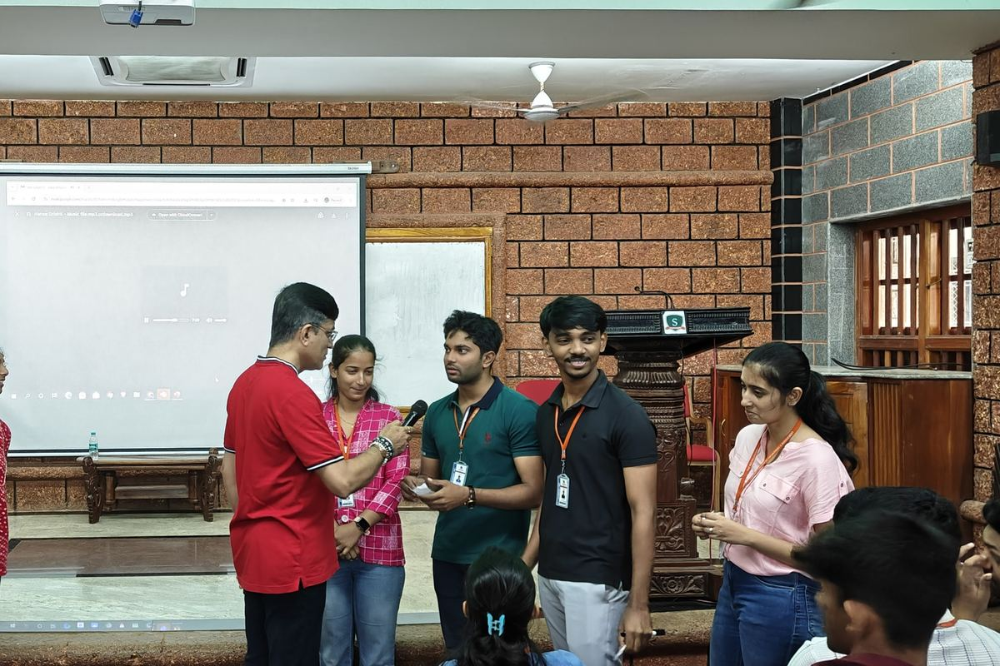

New graduates arrive capable but not yet corporate. We compress the gap between joining and contributing, so your onboarding investment pays back sooner and early attrition falls.
A graduate trainee who cannot yet communicate with clients, manage feedback, or navigate workplace norms takes months to become productive, and is more likely to leave. A focused, experiential bootcamp at intake changes that curve.

Trainees arrive on the floor already fluent in communication, etiquette, and professional judgment.
Emotional-intelligence and resilience practices help new hires settle, cope, and stay.
A whole cohort brought to a common professional baseline, regardless of which campus they came from.
Client conversations, team scenarios, and pressure situations rehearsed before they happen for real.
Led by an HR leader who has run onboarding and L&D at scale inside industry.
Built to your sector, your values, and the specific gaps in your incoming cohort.
The same experiential approach supports mid-level communication and leadership development, mindful-leadership sessions, and one-to-one executive coaching for senior professionals.
“After your first corporate cohort, ask the HR or L&D head for a specific line, how quickly trainees ramped, how the cohort compared to previous years. Concrete beats generic every time.”
Book a consultation and we will scope a bootcamp around your cohort and your goals.